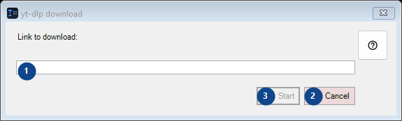
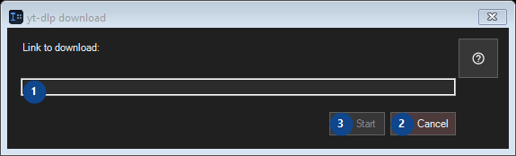

yt-dlp download
What this is for
Read the numbered elements, choose the values you need, then use the window’s command to continue.


In this order
Read the numbered elements, choose the values you need, then use the window’s command to continue.
The elements
1. Link to download:
Choose or enter the value for the adjacent label. Review it before continuing.
Your shortcuts2. Cancel
Use this command when you need the action named above. Review any confirmation before accepting it.
Your shortcuts3. Start
Use this command when you need the action named above. Review any confirmation before accepting it. This control is currently unavailable. Enable its feature or select an entry first.
Your shortcuts